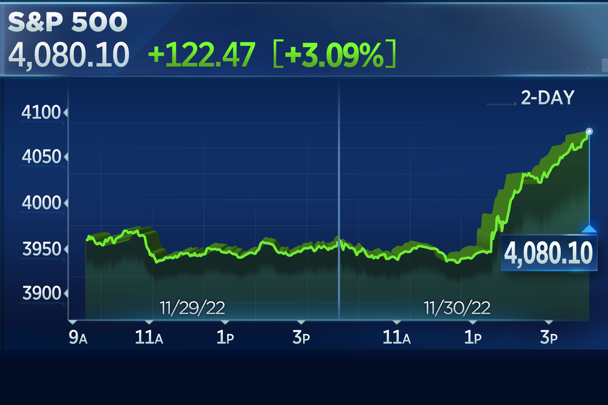
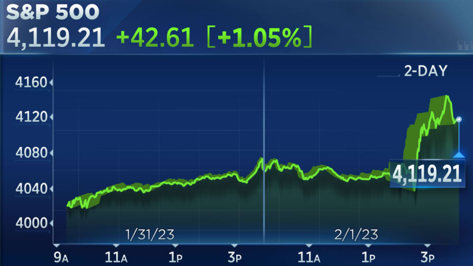
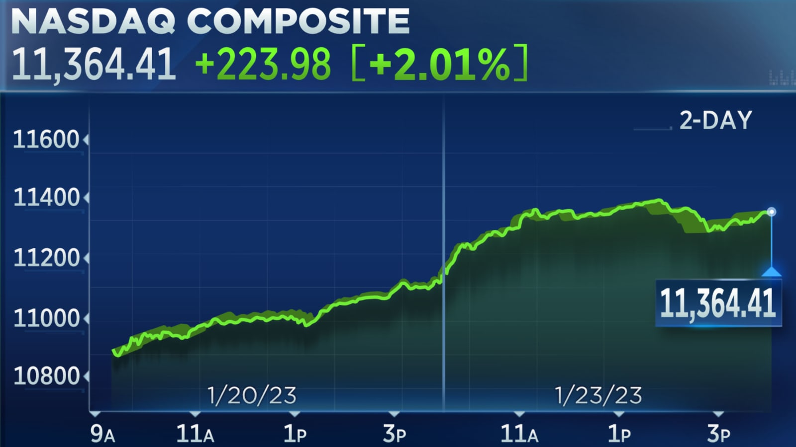

Latest Market News
Dow Jones Jumps 100 Points as Fed Signals Slower Rate Hikes
The Dow Jones Industrial Average rose 100 points on Wednesday, as investors reacted to the Federal Reserve's latest decision on interest rates. The Fed signaled that it will be slowing down the pace of its rate hikes, which helped to boost investor sentiment.
S&P 500 Ends Higher on Strong Earnings Reports
The S&P 500 index ended higher on Wednesday, as investors cheered strong earnings reports from several companies. Netflix, UnitedHealth Group, and Johnson & Johnson all reported better-than-expected earnings, which helped to lift the market.
Nasdaq Composite Edges Lower as Tech Stocks Face Headwinds
The Nasdaq Composite index edged lower on Wednesday, as technology stocks faced headwinds from rising interest rates. Investors are concerned that higher interest rates could hurt the profits of tech companies, which have been some of the biggest beneficiaries of low rates in recent years.